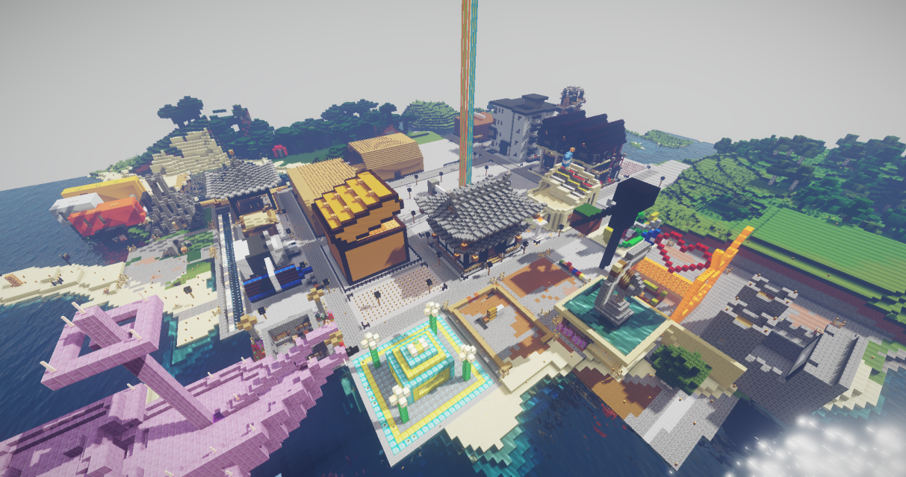

有你所想
有你所想
2013年，Ruby为三航四方BBS争取到更换服务器的机会，并同时筹划在BBS服务器上运行mc服务器。年底，由OLorz、Evalyn提供技术支持，由Ruby担任任服主，有记载的西工大第一个mc服务器诞生。但在2016年上半年，由于老玩家相继毕业以及没有新人加入，服务器暂时搁置。
第二周目(2016年-2018年) Ruby，Evalyn与OLOrz再次利用三航四方BBS闲置资源开服并延续了第一周目，由Ruby继续担任服主。 但在2018年初，由于负责人更换的缘故，服务器不能再继续挂靠西工大三航四方BBS，服务器被迫关停。 2018年三月，PrettyReol出资建立了西工大历史上第二个正式服务器，一开始仍然沿用之前的存档。但是由于存档文件过大，玩家一致决定重开存档。最后于当年六月停服。 PrettyReol建立西工大历史上第二个正式服务器 之后，Dai_Mao为了延续服务器的生命，毅然挺身而出利用VPS（即面板服）保住服务器使其免于夭折。
第三周目(2018.11-2020.4)由TeachingFeelings与Rinryrethoic合资续租VPS服务器，并正式定名NPUcraft。后Evalyn经与老师沟通，将服务器搭载在三航四方服务器上。时隔三年，西工大服务器重回三航四方！ 在这一周目，我们建造了宏伟的主城，聚集起了海量的玩家，并成功举办多次活动（花火大会） 但由于Minecraft1.16的大规模更新，第三周目于2020年春正式停服。
第四周目( 2020.6至今)
一开始运行在面板服上，9月份由小鹿担任服主，用自己的电脑维持服务器运行。 在过去多次经营服务器的经验积累下，这周目发展势如破竹。在仅仅不到一个月时间内实现服内共产主义并开始建造新周目的主城。 2020年9月17日，西北工业大学NPUcraft学生社团获批成立，正式开始面向全校招新。并于同时开始西工大复原工程。标志着西工大mc玩家正式走向大统一阶段。 2020年9月底，ARKsealin与Ay QiYue成功在基岩版1.16.40实现服务器运行，NPUcraft从此开始进军基岩版！（后因实现基岩版互通无人问津，而于次年六月关停） 2020年12月初，为保证服务器的正常流畅运行，服主小鹿众筹升级了当时使用的服务器主机。 2020年元旦，NPUcraft首次通过geyser插件实现JAVA-基岩版互通，服务器开始走向大统一。 2021年1月19日，由NPUcraft主办首届中国高校联盟联合活动-第一届新年速通活动（西工大服务器(NPUcraft)，小鸡服务器(XJcraft)，南京大学服务器(NJUcraft)，南京工业大学服务器(NJTU)，中国民航大学服务器(CAUC)，西安交通大学服务器(LYXJcraft)），尽管途中遇见种种问题，但最终圆满结束！ 2021年5月，社团获得学校资源支持，服务器搬迁至有史以来最高配置的专业型计算服务器。 2021年7月，服主小鹿宣布暂退，由第六任服主汐灵代职。 2021年7月17日，由NPUcraft技术支持，联合生存服（MUAsurvival）正式开服。 2021年7月27日，NPUcraftWiki(本站)上线，NPUcraft的历史转向全线上记载。 2021年7月24日，NPUcraft建筑师公会正式成立并开始审核招新。 2021年9月，NPUcraft长周目模组服『自然革命』上线。 2021年9月11-12日，百团大战。经过充分准备与完美的临场表现，服务器迎来新人潮高峰，群成员突破800。 2021年10月，NPUcraft模组服二周目『幻想天灾』上线。 2021年10月30日，NPUcraft皮肤站NPUskin上线。 2021年11月5日，西工大MINECRAFT爱好者社区官网上线。